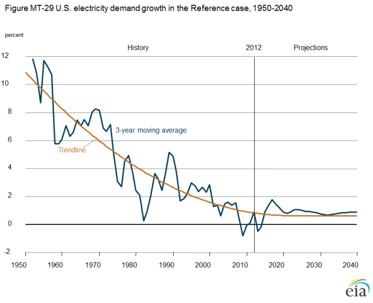
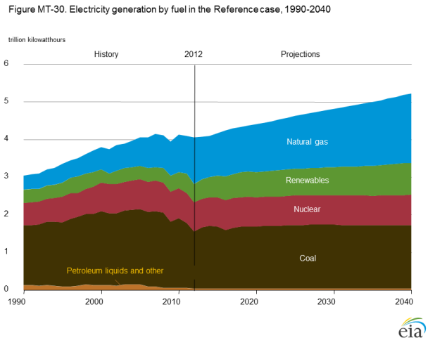
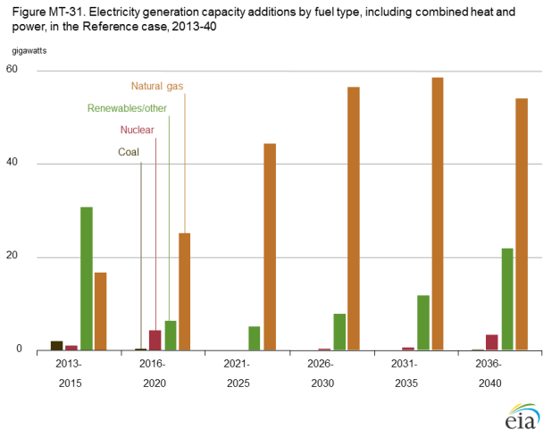
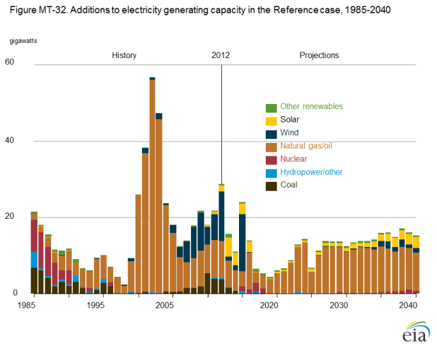
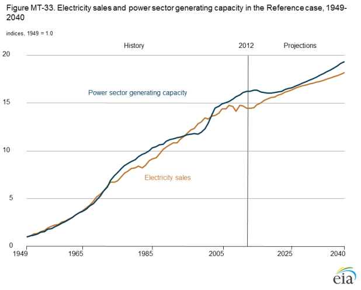
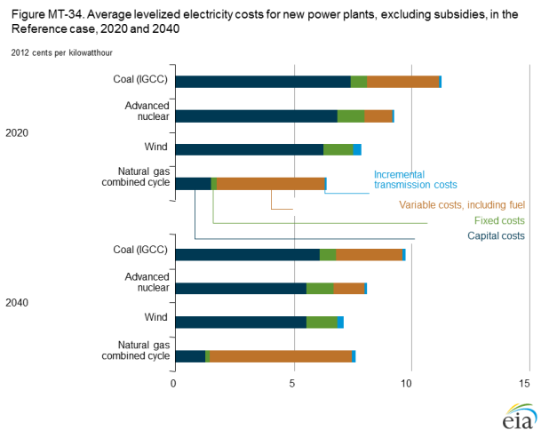
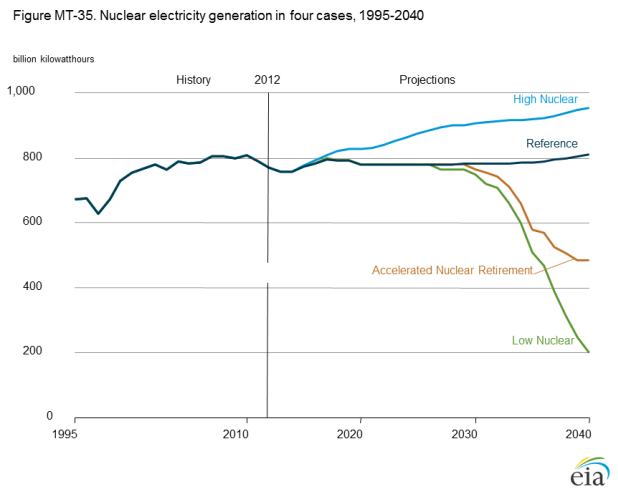
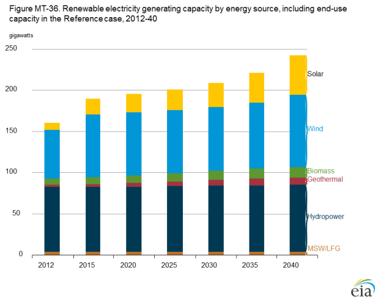
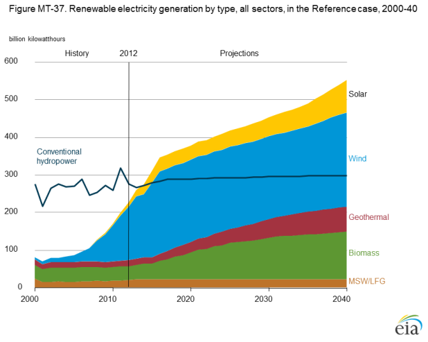
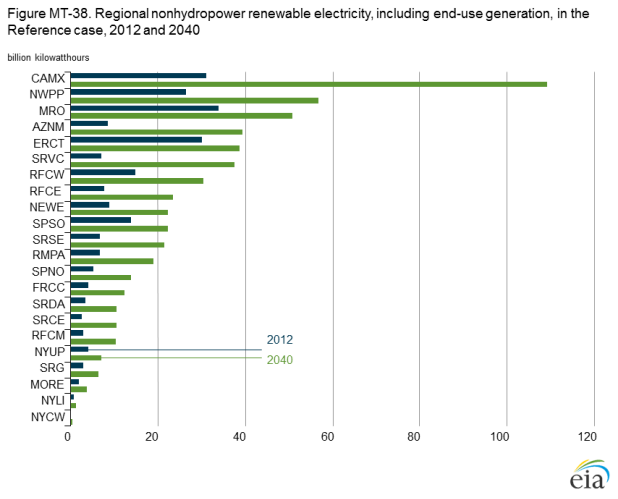

{kind=link}
{kind=link}
Annual Energy Outlook 2014
Release Date: May 7, 2014 | Next Release Date: March 2015 | See schedule | full report
Market Trends: Electricity demand
Growth in electricity use slows, but use still increases by 29% from 2012 to 2040
Growth of electricity demand (including retail sales and direct use) has slowed in each decade since the 1950s, from 9.8%/year from 1949 to 1959 to only 0.7%/year since 2000. In the AEO2014 Reference case, electricity demand growth remains relatively low, as rising demand for electric services is offset by efficiency gains from new appliance standards and investments in energy-efficient equipment (Figure MT-29). Total electricity demand grows by 29% (0.9%/year), from 3,826 billion kilowatthours (kWh) in 2012 to 4,954 billion kWh in 2040.

figure data
Retail electricity sales grow by 25% (0.8%/year) in the Reference case, from 3,686 billion kWh in 2012 to 4,623 billion kWh in 2040. Population shifts to warmer regions with greater cooling requirements affect both residential and commercial electricity sales. Residential electricity sales grow by 21%, to 1,657 billion kWh in 2040, with cooling needs offset by more efficient appliances and light bulbs. Electricity sales to the commercial sector rise by 27%, to 1,675 billion kWh in 2040, with continuous growth in demand for electrical devices and equipment. Sales to the industrial sector rise by 30%, initially in the primary metals and bulk chemical industries and later in the food, construction, and metal-based durables industries.
Electricity demand varies with different assumptions about economic growth, advances in energy-efficient technologies, and electricity prices. In the High Economic Growth case, electricity demand grows by 41% from 2012 to 2040, compared with 20% in the Low Economic Growth case and only 14% in the Best Available Demand Technology case. In the High Oil and Gas Resource Case, a 2% decline in electricity prices from 2012 to 2040, because of greater natural gas availability, results in demand growth of 35% over the same period. In contrast, in the Reference Case, electricity prices increase by 13% over the projection, while demand increases by 29%.
By 2035, natural gas surpasses coal as the largest source of U.S. electricity generation
The share of electricity generated from natural gas grows steadily in the AEO2014 Reference case (Figure MT-30). The shift to natural gas occurs primarily as a result of its relatively low cost and coal-fired capacity retirements, although coal maintains the largest share of the generation mix through most of the projection. Changes in fuel mix are primarily a function of natural gas prices, which drive dispatch decisions for both coal and natural gas plants. Although a significant number of coal plants are retired early in the projection, the reduction in coalfired generation is not proportional to the decline in capacity, because many of the coal plants projected to be retired currently operate at low capacity factors.

figure data
After 2020, increasing demand for electricity creates a need for new generating capacity, and natural gas plants account for more than 70% of all new capacity in the projection. As a result, the natural gas share of total electricity generation surpasses the coal share in 2035. Generation from nuclear power plants is relatively constant through 2040, increasing by an average of 0.2%/year, as 10 gigawatts (GW) of new capacity is brought online and 5 GW of older capacity is retired, and the nuclear share of total generation declines while the natural gas and renewable shares increase. Renewable generation grows by an average of 1.9%/year from 2012 through 2040 and makes up an increasing share of the generation mix in the Reference case. The non-hydropower share of total renewable generation increases from 45% in 2012 to 65% in 2040. The generation mix is sensitive to fuel prices and future policies and, therefore, varies significantly across the AEO2014 alternative cases.
Most new capacity uses natural gas and renewables
Decisions to add capacity, and the choice of fuel for new capacity, depend on a number of factors [8]. With growing electricity demand and the retirement of 97 GW of existing capacity, 351 GW of new generating capacity [9] is added in the AEO2014 Reference case from 2013 to 2040 (Figure MT-31).

figure data
Natural gas-fired plants account for 73% of capacity additions
from 2013 to 2040 in the Reference case, compared with 24%
for renewables, 3% for nuclear, and 1% for coal. Escalating construction
costs have the largest impact on capital-intensive
technologies, which include nuclear, coal, and renewables.
However, federal tax incentives, nuclear loan guarantees, state
energy programs, and rising prices for fossil fuels can increase
the competitiveness of renewable and nuclear generating
capacity. Federal and state environmental regulations also
affect the use of fossil fuels, particularly coal, as does uncertainty
about future limits on GHG emissions and other possible
environmental programs (reflected in the Reference case by
adding 3 percentage points to the cost of capital for new coalfired
capacity without carbon controls).
Uncertainty about demand growth and fuel prices also affects capacity planning. Capacity additions from 2013 to 2040 range from 263 GW in the Low Economic Growth case to 482 GW in the High Economic Growth case. In the Low Oil and Gas Resource case, with higher natural gas prices, new gas-fired capacity totals 181 GW, or 49% of total additions, from 2013 to 2040. In the High Oil and Gas Resource case, with natural gas prices that are lower than in the Reference case, 323 GW of new natural gas-fired capacity is added from 2013 to 2040, accounting for 83% of total new capacity.
Additions to power plant capacity slow after 2016 but accelerate beyond 2023
Past investments in electricity generation capacity have gone through boom-and-bust cycles, with periods of slow growth followed by rapid growth in response to changing expectations for future electricity demand and fuel prices, as well as changes in the industry, such as restructuring. A construction boom in the early 2000s saw capacity additions averaging 35 GW/year from 2000 to 2005, but the average dropped to 19 GW/year from 2006 to 2012 (Figure MT-32).

figure data
In the AEO2014 Reference case, capacity additions from 2013 to 2040 total 351 GW, including new plants in the power sector as well as end-use generators. Additions through 2016 average 16 GW/year, with 52% consisting of renewable plants built to take advantage of federal tax incentives and to meet state RFS. Eligibility rules for the wind production tax credit (PTC) allow new wind capacity coming online before 2016 to qualify, leading to a large increase just at the deadline.
Annual capacity additions drop significantly after 2016 and
remain below 9 GW/year until 2023, while existing capacity
is adequate to meet relatively slow demand growth in most
regions and satisfy renewable requirements under state standards.
From 2025 to 2040, annual builds average 14 GW/year,
as what was previously excess capacity is again needed. About
79% of the capacity added from 2025 to 2040 is fueled with
natural gas, given higher construction costs for other types of
capacity and uncertainty about the prospects for future limits
on GHG emissions.
Uncertainty about electricity demand growth affects annual capacity additions. In the Low Economic Growth case, annual additions average 10 GW/year from 2025 to 2040; in the High Economic Growth case, they increase to an average of 20 GW/year over the same period.
Growth in power generating capacity parallels rising sales of electricity
In the long term, growth in generating capacity parallels growth in electricity demand. However, unexpected shifts in demand or changes that affect capacity investment decisions can cause imbalances that may take years to work out. Capacity growth has outpaced demand since the 2007-09 economic recession that resulted in flat or declining demand. Low natural gas prices and tax incentives for renewable technologies have contributed to increases in those capacity types, even while most regions had sufficient capacity to serve load with an adequate reserve margin.
Figure MT-33 shows indexes summarizing relative changes in total power sector generating capacity and electricity sales. During the 1950s and 1960s, capacity and demand indexes tracked closely; but energy crises in the 1970s and 1980s slowed demand growth, with capacity additions outpacing demand for more than 10 years, as planned units continued to come online. Demand and capacity were aligned again in the mid-1990s, but in the late 1990s uncertainty about industry deregulation led to a downturn in capacity expansion, and another period of imbalance followed, with demand growth exceeding capacity growth

figure data
In 2000, a boom in construction of new natural gas-fired plants brought capacity back into balance with demand, but capacity continued to grow, creating excess. Construction of new wind capacity also grew after 2000. Excess capacity remains in the early years of the AEO2014 Reference case, until retirements eventually bring capacity growth and demand growth back into balance after 2023. In the later years, total capacity grows at a rate slightly higher than demand growth, due in part to an increase in intermittent renewable capacity that does not contribute to meeting demand in the same proportion as dispatchable capacity.
Costs and regulatory uncertainties vary across options for new capacity
Technology choices for new generating capacity are based largely on capital, operating, and transmission costs [10]. Coal, nuclear, and wind plants are capital-ntensive (Figure MT-34), whereas operating (fuel) expenditures make up most of the costs for natural gas plants. Capital costs depend on such factors as equipment costs, interest rates, and capital cost recovery periods, which vary with technology. Fuel costs vary with operating efficiency, fuel price, and transportation costs.

figure data
Capital costs can decline over time as developers gain technology experience, with the largest rate of decline observed for new technologies. In the AEO2014 Reference case, the capital costs of new technologies are adjusted upward initially to compensate for the optimism inherent in early estimates of project costs, then they decline as project developers gain experience. The decline continues at a progressively slower rate as more units are built. Operating efficiencies also are assumed to improve over time, resulting in reduced variable costs unless increases in fuel costs exceed the savings from efficiency gains.
In addition to considerations of levelized costs [11], some technologies and fuels receive subsidies, such as production or investment tax credits. Also, new plants must satisfy local and federal emissions standards and be compatible with the utility's load profile to maximize revenue.
Regulatory uncertainty also affects capacity planning. Laws and regulations may require new coal plants to include carbon control and sequestration equipment, resulting in higher material, labor, and operating costs. Because nuclear and renewable power plants (including wind plants) do not emit greenhouse gases, their costs are not directly affected by these specific sources of regulatory uncertainty.
Nuclear electricity generation varies with license renewals, uprates, and operating costs
Projections of nuclear capacity and generation are influenced by assumptions about the potential for capacity uprates, new licensing requirements, future operating costs, and outside influences such as natural gas prices and incentives for other generating technologies. In the Reference case, nuclear capacity and generation remain relatively flat, with early retirements offset by new additions (Figure MT-35).

figure data
As discussed in AEO2014 Issues in focus, the Accelerated
Nuclear Retirement case assumes no new nuclear builds
beyond those currently under construction; that all existing
units are retired by 60 years of age; and that nonfuel operating
costs at existing nuclear plants increase by 3% annually,
similar to recent rates. In this case, 42 gigawatts (GW) of
nuclear capacity is retired, mostly from 2030 to 2040. The Low
Nuclear case combines those assumptions with the High Oil
and Gas Resource case and the No Sunset case. Lower natural
gas prices make existing and new natural gas units more economical,
and together with tax credits for newly added renewable
capacity, they lower electricity market prices. With rising
operating costs for nuclear plants and lower electricity prices,
77 GW of nuclear capacity is retired before 60 years of life. The
retired nuclear capacity is replaced primarily by natural gas
capacity, leading to a 6% increase in CO2 emissions in the electric
power sector in 2040.
The High Nuclear case assumes more uprates of existing units, adding 6.0 GW of capacity, and the addition of 12.6 GW of planned capacity through 2027. As a result, total nuclear generation in 2040 is 17% higher than in the Reference case, reducing the need for additional natural gas-fired generation.
Solar photovoltaics and wind dominate renewable capacity growth
Total renewable generating capacity grows by 52% from 2012 to 2040 in the AEO2014 Reference case. Nonhydropower renewable capacity, particularly wind and solar, nearly doubles (Figure MT-36) and accounts for almost all of the growth in renewable capacity.

figure data
Solar power leads the growth in renewable capacity, increasing from less than 8 GW in 2012 to more than 48 GW in 2040. Wind capacity increases from less than 60 GW in 2012 to 87 GW in 2040, the second-largest amount of new renewable capacity. Although geothermal capacity more than triples and biomass capacity nearly doubles in the projection, combined they account for less than 15% of renewable capacity additions. Wind is the top source of nonhydropower renewable capacity in the projection, surpassing the hydropower share in 2036.
Renewable capacity growth is supported by a variety of federal and state policies, particularly state renewable portfolio standards (RPS) and federal tax credits. However, the impact of those policies is limited later in the projection period, because individual state renewable targets stop increasing by 2025, and projects must generally be online by 2016 to qualify for currently available federal tax credits. In addition, growth in electricity demand is modest and natural gas prices are relatively low after 2025. Renewable capacity grows by an average of 0.7%/year from 2020 to 2030, compared with 3.8%/year from 2010 to 2020. However, as natural gas prices rise over the projection period, renewable capacity becomes an increasingly cost-competitive option in some regions, and the total grows by an average of 1.5%/year overall from 2030 to 2040.
Total generation from wind, solar, and other renewables surpasses hydropower
Total renewable electricity generation grows by 1.9%/year on average in the Reference case, from 502 billion kWh in 2012 to 851 billion kWh in 2040. Nonhydropower renewables, averaging 3.2%/year growth, account for nearly all of the growth, with their total surpassing hydropower (the previous leader of renewable generation) in 2014 and accounting for about two-thirds of all renewable generation in 2040 (Figure MT-37).

figure data
Solar energy is the fastest-growing source of renewable generation, increasing by 7.5%/year from 2012 to 2040, almost exclusively as a result of increased photovoltaic capacity in both the electric power (central-station) and end-use (customer-sited) sectors. Wind generation grows by an average of 2.0%/year but provides the largest absolute increase in renewable generation. From 2012 to 2016, wind power developers take advantage of the existing federal PTC, which requires plants to be under construction by the end of 2013 to qualify.
Geothermal power is the second-fastest-growing source of renewable electricity generation in the Reference case, increasing from less than 16 billion kWh in 2012 to 67 billion in 2040—a 5.4% average annual growth rate. Biomass generation also grows significantly, increasing by an average of 4.4%/year from 2012 to 2040, primarily as a result of increased use of co-firing technology in the electric power sector in the near- to mid-term. Co-firing is encouraged by state-level policies and increasing regional cost-competitiveness with coal. In the long run, the growth of biomass generation is supported by increased capacity at dedicated biomass plants in the electric power sector, as well as combined heat and power plants in the industrial sector.
California leads renewable electricity generation growth
In the AEO2014 Reference case, nonhydropower renewable generation increases from 2012 to 2040 in all modeled electricity regions (for a map of the regions and definition of acronyms, see Appendix F). Its growth is faster in some regions than in others, and the penetration in the generation mix and resulting increases in generation vary substantially among regions (Figure MT-38).

figure data
Regional growth in nonhydropower renewable generation is mainly driven by three factors: state RPS, availability of renewable energy resources, and cost competiveness with fossil fuel technologies. Factors such as electricity demand growth, non-RPS policies (such as net metering), and electricity prices also affect the rate of growth, which tends to be strongest in regions where a combination of factors is in place.
The WECC California (CAMX) region accounts for both the highest absolute level of nonhydropower renewable generation in 2040 and the largest growth from 2012 to 2040, which is supported by an aggressive RPS, availability of solar, wind, and geothermal resources, and relatively high electricity prices. The AZNM (Arizona, New Mexico, and Nevada) and SRVC (Virginia, North Carolina, and South Carolina) regions show the next-highest increases in nonhydropower renewable generation from 2012 to 2040. In the AZNM region, growth is supported by mandatory RPS standards, above-average electricity demand growth, and the availability of solar and wind resources. Although Virginia and South Carolina do not have mandatory policies in place, the SRVC region has robust biomass and solar resources and relatively high fossil fuel prices.
Endnotes
- Factors that influence decisionmaking on capacity additions include electricity demand growth, the need to replace inefficient plants, the costs and operating efficiencies of different power generation options, fuel prices, state RPS programs, and the availability of federal tax credits for some technologies
- Unless otherwise noted, the term capacity in the discussion of electricity generation indicates utility, nonutility, and CHP capacity.
- Costs are for the electric power sector only.
- The levelized costs reflect the average of regional costs. For detailed discussion of levelized costs, see U.S. Energy Information Administration, "Levelized Cost of New Generation Resources in the Annual Energy Outlook 2014," http://www.eia.gov/outlooks/aeo/electricity_generation.cfm.
In This Section
- Growth in electricity use slows, but use still increases by 29% from 2012 to 2040
- By 2035, natural gas surpasses coal as the largest source of U.S. electricity generation
- Most new capacity uses natural gas and renewables
- Additions to power plant capacity slow after 2016 but accelerate beyond 2023
- Growth in power generating capacity parallels rising sales of electricity
- Costs and regulatory uncertainties vary across options for new capacity
- Nuclear electricity generation varies with license renewals, uprates, and operating costs
- Solar photovoltaics and wind dominate renewable capacity growth
- Total generation from wind, solar, and other renewables surpasses hydropower
- California leads renewable electricity generation growth